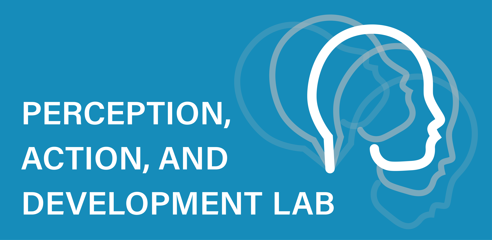

Lab phone: 951.827.5295
Lab email: padlab.UCR@gmail.com
Mailing address
Department of Psychology
University of California, Riverside
900 University Avenue
Riverside, CA 92521
Lab address
Olmsted Hall, Rooms 2136
Riverside, CA 92507
Parking: Lot 6 on West Campus Drive
Employment and Education
| 2022- | Associate Professor, Dept. of Psychology, University of California, Riverside |
| 2014-2022 | Assistant Professor, Dept. of Psychology, University of California, Riverside |
| 2013-2014 | Post-Doctoral Fellow, Dept. of Psychological and Brain Sciences, Indiana University |
| Sponsors: Chen Yu & Linda Smith | |
| 2011-2013 | Post-Doctoral Researcher, Dept. of Psychology, New York University |
| Sponsors: Karen Adolph & David Heeger | |
| 2009-2011 | Ph.D., Experimental Psychology, New York University |
| Advisor: Karen Adolph | |
| 2006-2009 | M.A., Experimental Psychology, New York University |
| 2005-2006 | Lab Coordinator, Dept. of Psychology, Rutgers University, Newark |
| 2001-2005 | B.A., Cognitive Science, University of Virginia |

Current Lab Members
Lab Alumni
- Brianna McGee (doctoral student)
- Tasnia Haider (research staff)
- Ishatpreet Kaur (research staff)
- Geethanjali Chandroth (research staff)
- Tramanh Troung (research staff)
- Iman Feghhi (doctoral student)
- Jenna Monson (doctoral student)
- Morvareed Rezaian (research staff)
Publications
#|output: false
#|echo: false
library(reactable)
library(tidyverse)
library(htmltools)
library(reactablefmtr)
refs <- read_csv("publications/publications.csv")refs_clean <- refs %>%
mutate(citation = sprintf("%s (%d). %s %s.", authors, year, title, venue), .after = url) %>%
select(-editors, -numbers, -title, -venue) %>%
relocate(type, .after = citation) %>%
relocate(year, .before = authors) %>%
relocate(abstract, .after = year)
reactable(refs_clean,
filterable = TRUE,
searchable = TRUE,
defaultSorted = c("year"),
defaultSortOrder = "desc",
elementId = "cars-select",
showPageSizeOptions = TRUE,
pageSizeOptions = c(20, 40, 60, 80),
paginationType = "jump",
defaultPageSize = 20,
defaultColDef = colDef(show = FALSE, name = ""),
columns = list(
abstract = colDef(show = TRUE, maxWidth = 22, filterable = FALSE,
cell = function(value, index) {
s <- ""
}, details = function(index) {
paste("Abstract: ", refs[index, "abstract"])
}),
year = colDef(show = TRUE, maxWidth = 70,
filterInput = function(values, name) {
tags$select(
# Set to undefined to clear the filter
onchange = sprintf("Reactable.setFilter('cars-select', '%s', event.target.value || undefined)", name),
# "All" has an empty value to clear the filter, and is the default option
tags$option(value = "", "All"),
lapply(unique(values), tags$option),
"aria-label" = sprintf("Filter %s", name),
style = "width: 100%; height: 28px;"
)}),
authors = colDef(show = TRUE, minWidth = 350, filterable = FALSE,
cell = function(value, index) {
title <- refs$title[index]
div(
div(title),
div(style = "font-weight: 200", value),
div(style = "font-weight: 200", refs$venue[index]),
)}),
url = colDef(maxWidth = 23, show = TRUE, filterable = FALSE, cell = function(value, index) {
if (is.na(refs[index, "url"])) {
url <- as.character(refs[index, "doi"])
htmltools::tags$a(href = url, target = "_blank", '\U29C9')
} else {
url <- sprintf("publications/%s", refs[index, "url"])
htmltools::tags$a(href = url, target = "_blank", '\U2193')
}
}),
type = colDef(maxWidth = 115, show = TRUE,
filterInput = function(values, name) {
tags$select(
# Set to undefined to clear the filter
onchange = sprintf("Reactable.setFilter('cars-select', '%s', event.target.value || undefined)", name),
# "All" has an empty value to clear the filter, and is the default option
tags$option(value = "", "All"),
lapply(unique(values), tags$option),
"aria-label" = sprintf("Filter %s", name),
style = "width: 100%; height: 28px;"
)}
)
))Who are we?

The Perception, Action, & Development Lab is directed by Dr. John Franchak in the UC Riverside Department of Psychology. Dr. Franchak advises students in the Developmental and Cognition and Cognitive Neuroscience areas of the Psychology Department. The lab’s research is funded by grants from the National Science Foundation and James S. McDonnell Foundation
What do we study?
Everyday Experiences
How does motor development shape infants’ opportunities for learning about objects and people?
Visual Exploration
How do people coordinate eyes, head, and body to gather task-relevant visual information?
Action Possibilities
How do people adapt to changes in the body to decide what actions—like fitting through doorways—are possible?
See our research in action
Join our team
We are accepting applications for undergraduate research assistants on a rolling basis. Please fill out the form, and we will get back to you when we have openings.
Dr. Franchak plans to accept a doctoral student for the 2023-2024 academic year. If you are a prospective graduate student, feel free to email him to express your interest in applying.